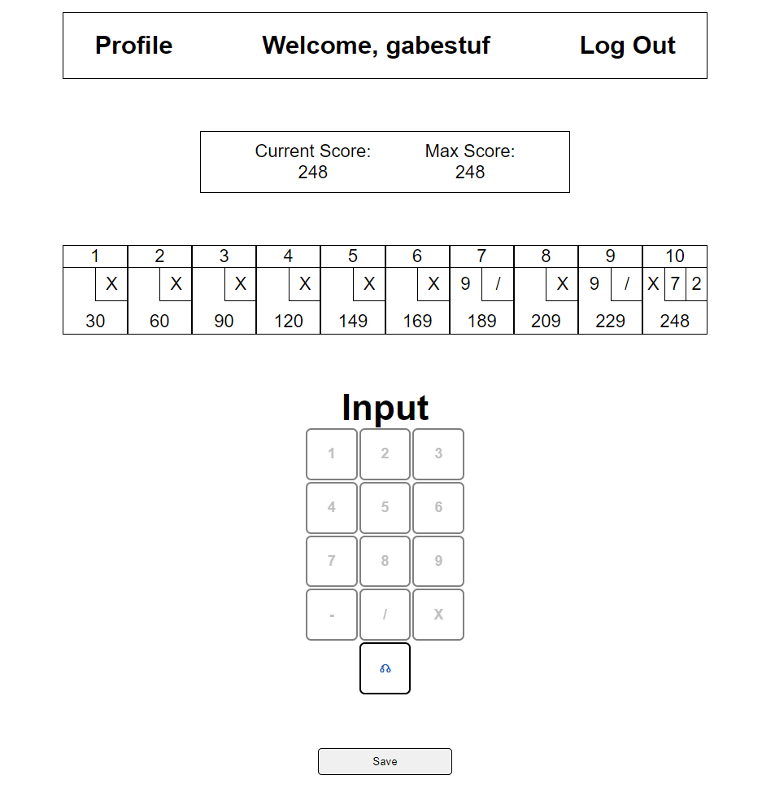
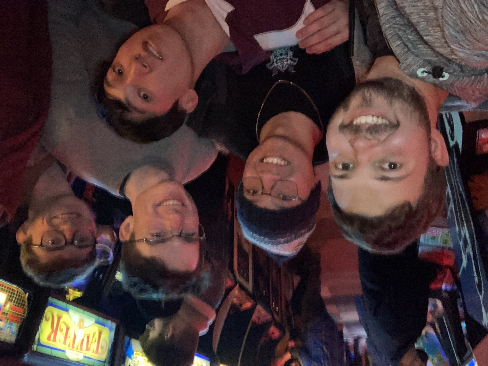

Hello There
I am currently a student at Worcester Polytechnic Institute studying Computer Science, where I have participated in many software development teams and projects. For my contact information and resume, please click here. Keep scrolling to learn a little about me!
Weekend Web Projects
Once in a while when there's a new framework I want to try, or I have an idea in mind, I'll spend a weekend seeing how far I can get with the project. Here are some recent ones I've done!
Bowling Scorekeeper
An application to keep track of bowling scores!
InQ
Create and share surveys!
About Me
Computer Science
Studying computer science at WPI has been an incredible journey!
Music Technology & Production
I've been lucky enough to continue my musical education in college. I worked at a music technology camp over the summer and have learned and practiced various instrument and recording processes.
Computer Gaming
Computers became more significant after I discovered PC gaming. I began learning more about computer hardware and how different components worked.
Guitar
I began practicing learning at the beginning of high school. I continue to play gigs with my friends and have played in a few bands including Mourning Routine and Emergency Stop.

Sports
Playing varsity baseball in high school was one of the most demanding and satisfying experiences I've had. Competition at that level forced me to approach problems differently. Training and preparing taught me that it takes a long time to develop skills. Now I play squash, golf and go bowling regularly, though I could still strike you out, given the chance.
Study Abroad - Lyon, France!
For my Interactive Qualifying Project at WPI, I was fortunate enough to be able to travel to Lyon, France, and work with an organization called SINGA! They work with migrants and refugees integrate them into host countries, such as France. We worked on SINGA Lyon's entrepreneurial incubation program, specifically how to incorporate the program's alumni.

Bowling
I've recently gotten into bowling! I've built a small web app to keep track of my scores. I recently hit 248! 250 is right around the corner!

Living in Massachussetts
Here are just a few of my 8 roommates! We may not have a lot of space, but rent is super low. I couldn't imagine my college career without them.
